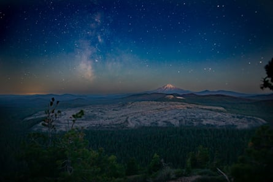
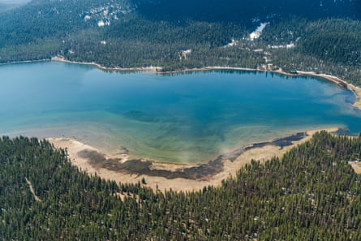
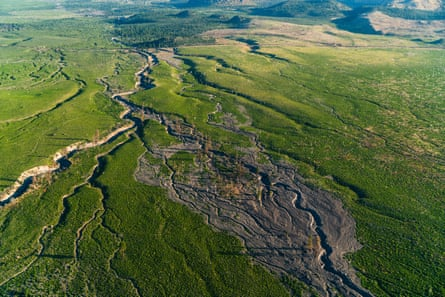

I t’s easy to get lost in the Sáttítla Highlands in remote north-eastern California . There are miles of rolling lava fields, untouched forest and obsidian mountains. At night, the darkness and silence stretch on indefinitely.
This is one of America’s newest national monuments. It’s also one of the most threatened.
In January, the Pit River Tribe celebrated a victory decades in the making when Joe Biden granted federal protection to nearly 230,000 acres of forested lands with the creation of the Sáttítla Highlands national monument.
“The awe-inspiring geological wonders collectively described here as the Sáttítla Highlands have framed the homelands of Indigenous communities and cultures for millennia,” the proclamation reads, recognizing the area as “profoundly sacred”.
The tribe, along with environmental groups, had fought for years to safeguard the land from industrial energy development. The area just north of Mount Shasta, popular for recreation and some of the darkest nighttime skies in the US, is the site of the tribe’s creation story and regularly used for ceremonies.
“This is a healing place for our people. It’s really tied to our traditional health,” said Brandy McDaniels, a member of the Pit River Tribe. “We’ve spent a lifetime trying to defend this area.”
The designation ensures no future energy development and mineral extraction can occur on the land while keeping it available for public recreation.
But then in March, Donald Trump said he would undo Biden’s action and roll back protections for Sáttítla and Chuckwalla national monument, which he argued “lock up vast amounts of land from economic development and energy production”.
Although legal experts say there is no clear mechanism for a president to rescind monument protections – only to shrink them – the justice department argued in a recent memo that it is in fact within Trump’s authority to “alter a prior declaration”, suggesting the administration will move forward with efforts to remove national monument designations for hundreds of thousands of acres of wilderness.
Night sky view from Mount Hoffman toward Mount Shasta with Little Glass Mountain Obsidian Flow in the middle ground.Photograph: Bob Wick/USDA Forest Service
Now, as the tribe tries to move forward after years of pushing with limited resources, pro bono attorneys and “scraping up every cent” to get to court hearings and protests, another battle could be on the horizon.
‘Almost like you’re in another world’
Located five hours north-east of the California state capitol in a sparsely populated region, Sáttítla is far off the beaten path.
“You’re not trying to get somewhere else if you’re going there. It’s very dark, it’s very quiet, there’s no cellphone reception,” said Nick Joslin, the policy and advocacy director with the Mount Shasta Bioregional Ecology Center, an area environmental advocacy group. “It’s very easy to get lost.”
The monument’s 224,676 acres include portions of the Modoc, Shasta-Trinity and Klamath national forests, are home to endangered and rare flora and fauna, massive underground volcanic aquifers that supply water to millions of people and store as much water as 200 of California’s largest surface reservoirs combined. Due to heavy snow, it’s largely only accessible by car for a few months of the year.
The landscape, with its islands of old-growth pine forests, snow covered mountainsides and scattered lakes, is stunning and otherworldly. It is filled with unique geological features such as ice caves, lava tubes and lava flows, Joslin said. Then there is the half-million-year-old dormant volcano, roughly 10 times the size of Mount St Helens, within the monument. Locals routinely camp, hike the hundreds of miles of trails or take boats out on Medicine Lake.
“It’s a place that’s known for its high quality of silence that you can’t experience in any other place, and also its night skies,” McDaniels said. “Depending on where you’re at, people describe it as it’s almost like you’re in another world, like you’re on another planet.”
There are markers of human disruption. Checkerboard swaths of forest where trees have been clear cut, and large stretches of land with second-growth trees that look like toothpicks from the air.
Medicine Lake in the Sáttítla Highlands.Photograph: EcoFlight
For Indigenous people, this area is sacred as the place of the creation narrative of the Pit River Tribe. The tribe holds important ceremonies there and collects staple foods such as berries from manzanita and currant plants, sugar pine seeds, and plants used in medicinal capacities.
“The landscape of the area literally tells the history of our people. In that way, it is part of the true history of the United States of America,” McDaniels said.
An undeveloped landscape under threat
The tribe fought to protect the area for nearly three decades, she added, challenging geothermal development and large-scale logging.
Because Sáttítla is a volcanic area, there was speculation that there might be enough heat to develop geothermal resources, and in the 1980s the federal government awarded leases on thousands of acres to private energy companies, said Deborah A Sivas, the director of the Environmental Law Clinic at Stanford.
The Environmental Law Clinic represented the tribe in a series of litigation challenging the extension of some leases and proposed projects, arguing the federal government had failed to consult the tribe, Sivas said. Industrial energy development would have required a dramatic transformation of the landscape to achieve and the tribe was opposed to such an intrusion on sacred land, and feared the hydraulic fracturing used to generate geothermal energy could pollute the aquifers.
Ultimately there wasn’t the resource potential initially thought, Sivas said. The final settlement with Calpine, the last remaining company with control over the land, was signed just two days after the monument declaration.
While there has been broad community support for a monument, Joslin noted, some elected officials in the conservative region have been more tepid.
Doug LaMalfa, a congressperson whose district includes Sáttítla, described Biden’s action as “executive overreach” and argued it would “create unnecessary challenges for land management, particularly in wildfire prevention and maintaining usage for local residents”.
But there has been no organized opposition against the monument.
Presidents have the authority to give protected status to land with cultural, scientific or historic resources of national significance, and Biden and other presidents have typically used it for conservation and to support tribes.
In the case of Sáttítla, the designation protects against industrial energy development, but does not prevent recreation, Sivas said, or bar the US Forest Service from doing wildfire management work.
But Trump has taken a combative stance on national monuments as part of his pro-energy agenda, slashing the size of Utah’s Bears Ears and Grand Staircase national monuments during his first term (a move that was later reversed by Biden). Earlier this month, the Department of Justice issued a memorandum opinion arguing that Trump has the authority to not only shrink but entirely abolish national monuments created by his predecessor.
Bolam Creek in the Sáttítla Highlands.Photograph: EcoFlight
But the legal argument for that position appears tenuous. Sivas said the Antiquities Act, the statute under which national monuments are designated, does not give the president the authority to do so.
“There’s no language in there that suggests that he could de-designate or roll back what prior presidents have done,” Sivas said. She added that the recent argument made by the administration was not particularly persuasive.
Given the lack of opposition to Sáttítla, the move seems designed to instead test the limits of the president’s power, Sivas said. If the administration does proceed with a rollback, legal action will follow, she added, which she expects will make its way to the supreme court.
“We will be filing litigation if that happens. This is a kind of a canary in the coal mine.”
McDaniels described the efforts to rollback protections as “perplexing”. She pointed to the interior secretary Doug Burgum’s address to the National Congress of American Indians in which he indicated he didn’t believe the nation’s “most precious places”, such as parks and monuments, should be targeted for development.
But the tribe is focused on celebrating the monument, informing the public about the significance of these lands and ensuring it continues to serve as a healing place for the Indigenous people who have endured a long history of genocidal acts and injustices, McDaniels said.
“Truth and healing cannot begin if we’re constantly fighting to protect our sacred lands,” McDaniels said.
“That’s what we don’t want for our kids, our grandkids and all future generations. Everybody deserves the right to experience the gifts that this land makes available for people.”